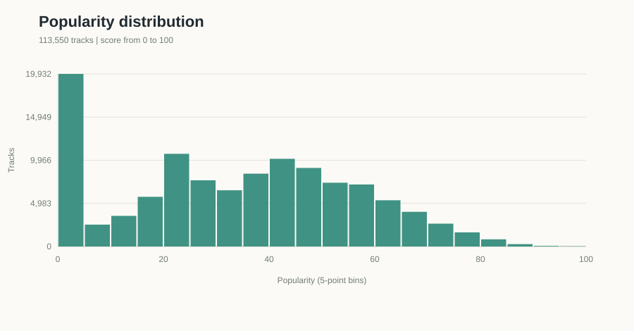
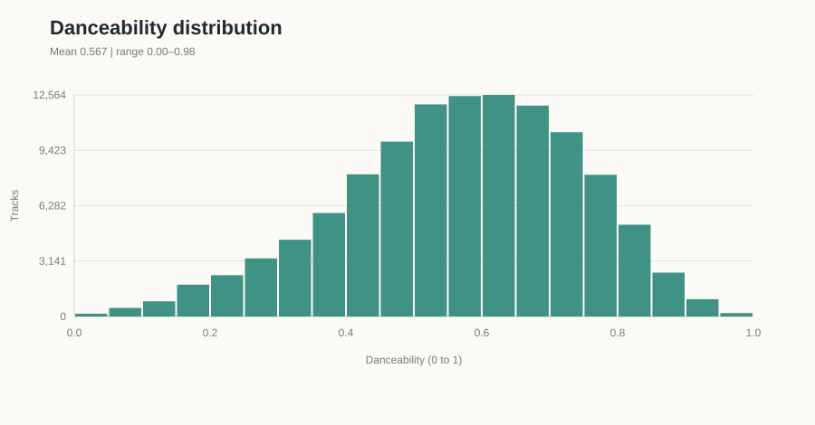
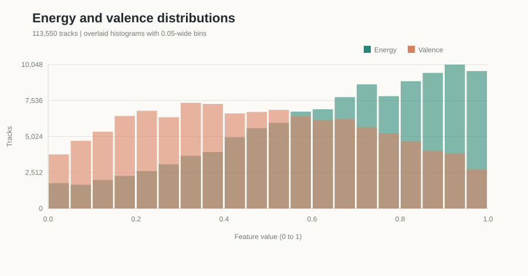
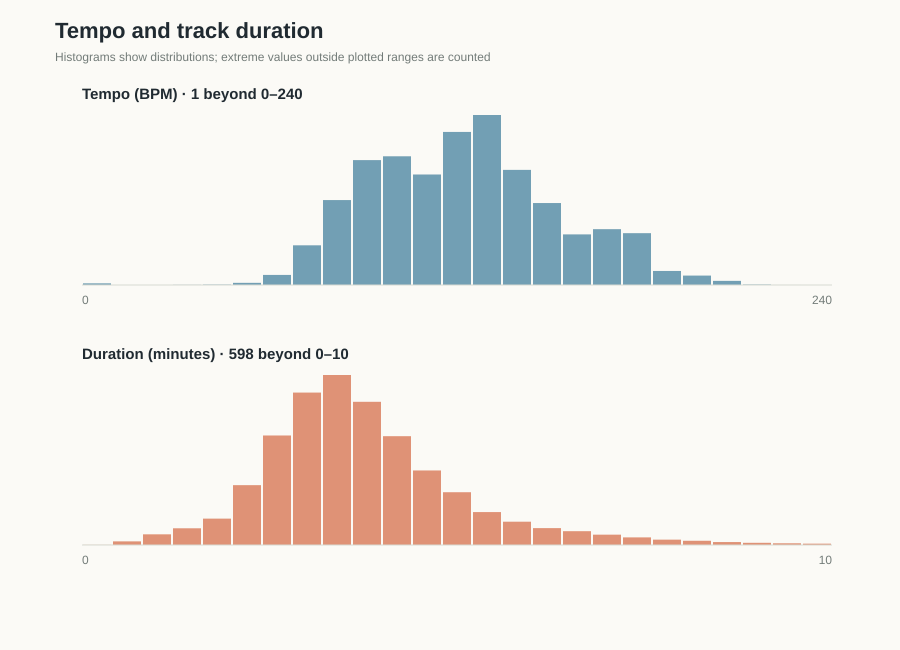
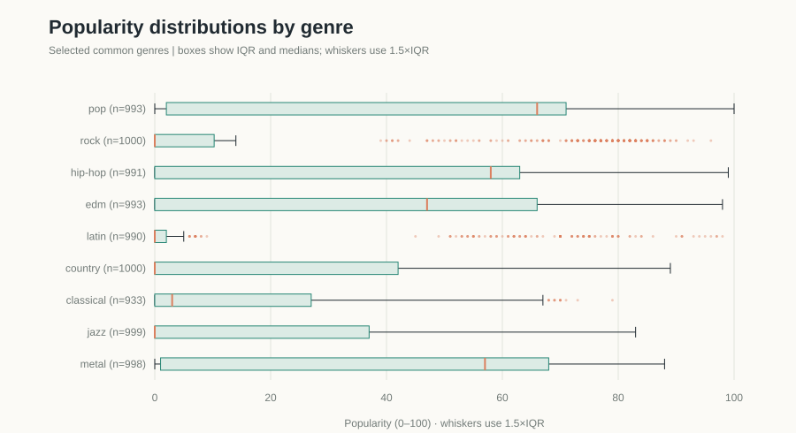
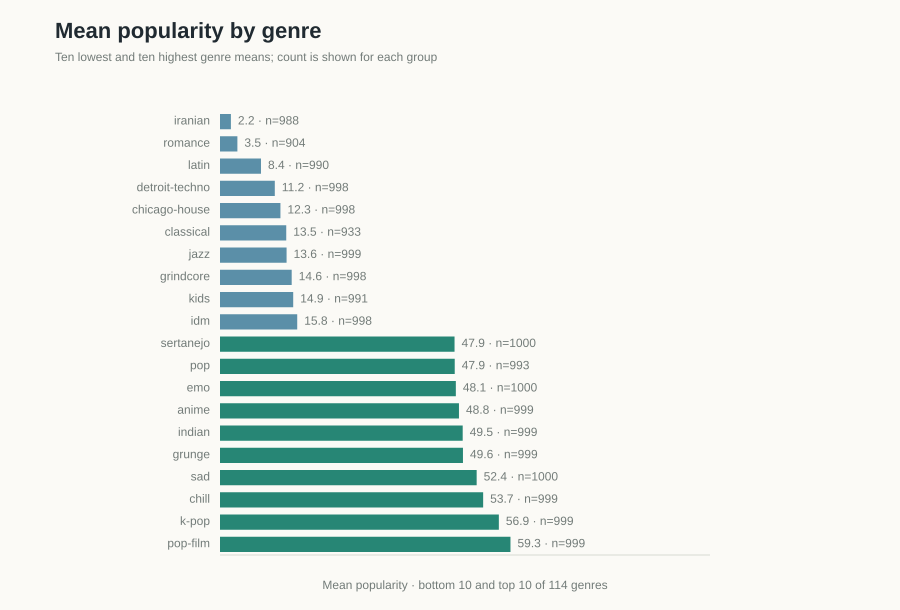
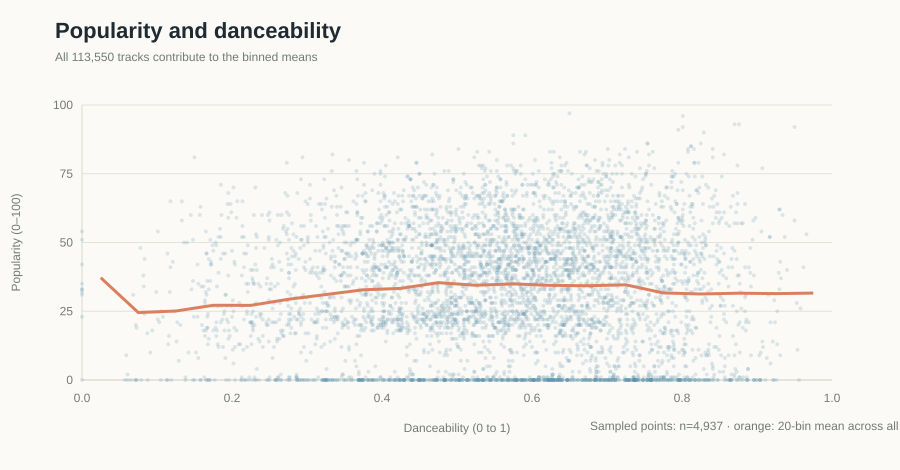
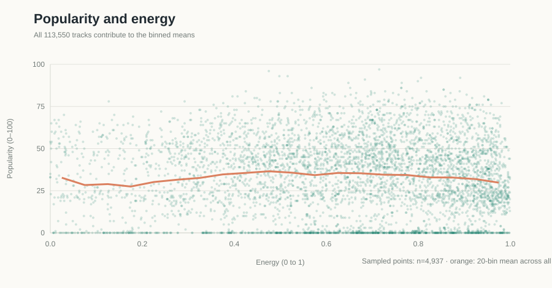
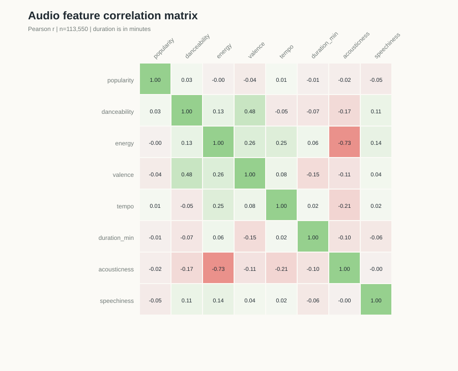
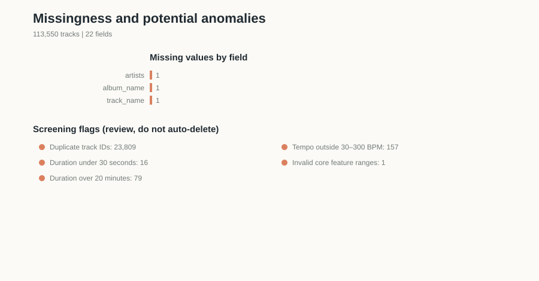

Exploratory analysis
What musical characteristics are associated with higher Spotify popularity?
Dataset & method
Explore the prepared tracks.
This analysis uses the Spotify Tracks Dataset | Audio Features selected in Assignment 01. Following the preparation documented in Assignment 03, the dataset contains 113,550 rows, 22 fields, and 114 genre labels. Figures and summaries below use this prepared file.
The analysis describes patterns in this dataset. Correlation and genre differences do not show that audio features cause popularity, and Spotify popularity is affected by factors not measured here.
Course · TECH*3745*01
Professor · Xiwang Guo
Part 01 · Ten exploratory visualizations
What the data shows.
Each figure is followed by an observation, an interpretation, and its implication for the research question.

Popularity distribution
- Observation
- The median is 35 and the mean is 33.32. There are 15,844 tracks (14.0%) with a score of zero; 5,468 (4.8%) score 70 or higher.
- Interpretation
- Popularity is concentrated at low-to-middle scores, with a substantial zero-score group and a thin high-score tail.
- Research implication
- Popularity is not normally distributed. Interpret averages alongside medians and the zero-score pile-up.

Danceability distribution
- Observation
- Danceability averages 0.567, with a median of 0.58 and a range from 0 to 0.985. Most tracks fall in the middle of the scale.
- Interpretation
- The dataset includes variation across the feature, but very low and very high scores are less common.
- Research implication
- The feature can be compared with popularity, but the relationship should not be assumed to be linear or causal.

Energy and valence
- Observation
- Energy has a mean of 0.641 and median of 0.685; valence has a mean of 0.474 and median of 0.464. Both span almost the full 0–1 scale.
- Interpretation
- Energy is more concentrated toward higher values; valence is closer to the scale midpoint.
- Research implication
- Audio characteristics vary across the sample, but their popularity associations need to be measured rather than inferred from these distributions.

Tempo and duration
- Observation
- Tempo's median is 122 BPM, but 157 rows record tempo as 0. Duration's median is 3.55 minutes and its range reaches 87.29 minutes; 16 tracks are under 30 seconds and 79 exceed 20 minutes.
- Interpretation
- Most tracks fall in typical song-length and tempo ranges, but zero-tempo records and extreme durations are potential data anomalies.
- Research implication
- Inspect these records before modeling; excluding zero-tempo rows barely changes its popularity correlation (r = 0.013 vs. 0.012 with zeros retained).

Popularity distributions by genre
- Observation
- Group sizes range from 933 to 1,000. Medians differ: pop 66, hip-hop 58, metal 57, EDM 47, and classical 3. Several groups have many zero scores.
- Interpretation
- Popularity distributions differ substantially by genre, with broad within-genre spreads and low-score outliers.
- Research implication
- Genre is an important comparison and possible confounder when examining audio features against popularity.

Mean popularity across genres
- Observation
- Pop-film has the highest mean (59.3; n=999) and Iranian the lowest (2.2; n=988), a 57.1-point difference. Prepared genre sizes range from 904 to 1,000.
- Interpretation
- Genre averages vary widely. Group sizes are close but no longer identical after removal of exact duplicate rows.
- Research implication
- Genre differences are prominent in this sample, but the Kaggle source's original equal-per-genre sampling still does not represent Spotify listening or catalog prevalence.

Popularity and danceability
- Observation
- The Pearson correlation is 0.034. Binned mean popularity rises from 26.5 at danceability 0.1–0.2 to about 34.7 at 0.5–0.6, then declines to 31.4 at 0.9–1.0.
- Interpretation
- The overall linear association is negligible; the binned pattern is shallow and non-monotonic.
- Research implication
- The results do not support a simple claim that more-danceable tracks are more popular. Examine genre-specific patterns before drawing conclusions.

Popularity and energy
- Observation
- The Pearson correlation is −0.002. Binned mean popularity peaks around 36.1 for energy 0.4–0.5 and falls to 30.9 for energy 0.9–1.0.
- Interpretation
- There is effectively no linear association across the full sample, although the binned averages suggest a modest non-linear pattern.
- Research implication
- The simple positive-energy hypothesis is not supported by the overall correlation; test non-linear and genre-specific effects in later analysis.

Correlations among audio features
- Observation
- Popularity's correlations are all very small: speechiness −0.045, valence −0.041, danceability 0.034, acousticness −0.022, tempo 0.012, energy −0.002, and duration −0.008. Removing the 157 zero-tempo records changes tempo's correlation only to 0.013.
- Interpretation
- No single listed feature has a meaningful linear relationship with popularity in the full prepared dataset.
- Research implication
- Popularity likely depends on more than these audio features. The heatmap motivates multivariable and subgroup analysis, while correlation alone cannot reveal causality or all non-linear patterns.

Missingness and potential anomalies
- Observation
- There are three blank text cells (one each in artists, album_name, and track_name), 23,809 rows with a repeated track ID, 157 zero-tempo records, and one zero-duration record. Preparation removed 450 exact duplicate rows; 16,299 IDs still span multiple genre labels.
- Interpretation
- The remaining repeated IDs reflect tracks with multiple genre assignments, not exact duplicate rows. The blank metadata, zero tempo values, and extreme durations still warrant review.
- Research implication
- Preserve track–genre assignments and avoid deduplicating on track_id; interpret zero-tempo and unusual-duration records carefully in relevant analyses.
Part 02 · Findings for the paper
Five results to carry forward.
These are descriptive findings from this dataset and can seed the Results section. They should not be presented as causal explanations.
- Popularity is concentrated at low and middle scores. The median is 35; 14.0% of prepared tracks have a zero score, and 4.8% score 70 or higher.
- Genre averages differ sharply. Mean popularity ranges from 2.2 for Iranian to 59.3 for pop-film; prepared group sizes range from 904 to 1,000 rows.
- Pooled linear relationships with popularity are negligible. Danceability's Pearson r is 0.034 and energy's is −0.002; other examined feature correlations are also close to zero.
- Feature trends may be non-linear. Binned averages peak at moderate danceability and energy, so a single correlation coefficient does not capture the full pattern.
- Data structure and quality need careful handling. After removing exact duplicate rows, the prepared file has a few blank text cells, 157 zero-tempo rows, and repeated IDs for tracks assigned to multiple genres; cleaning decisions could change results.
Interpretation & limits
Popularity is not a measure of sound alone.
The source sampling allocated 1,000 rows per genre, but removing exact duplicate rows produces prepared genre counts from 904 to 1,000; tracks may also have multiple genre labels. These details affect interpretation of overall and genre-level statistics. Popularity may reflect artist recognition, playlist placement, marketing, release timing, and exposure. This file has no release-year column, so a temporal trend cannot be tested here. Audio-feature associations should be described as associations, not causes.
Dataset & reproducibility
Charts were regenerated from the 113,550-row, 22-column prepared CSV linked in Assignment 03 using the Node.js analysis script. The computed summary records the statistics behind these findings. The dataset page reports no missing values, but this file scan found three blank metadata cells. The popularity scatter plots show a deterministic sample of points for readability; their orange trend lines use all 113,550 prepared tracks.